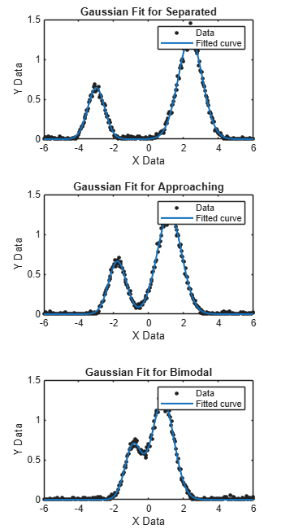
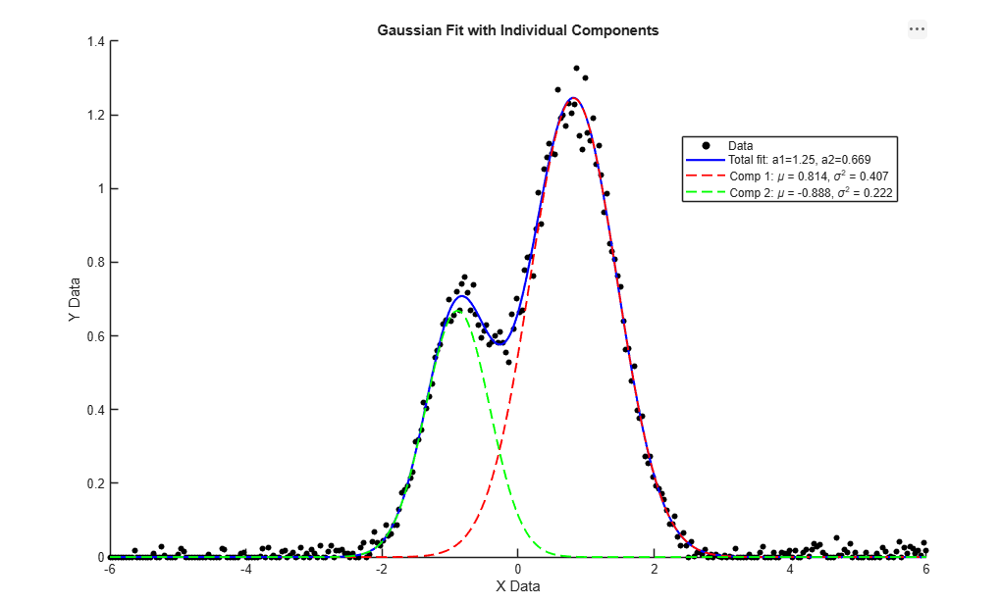

* MatLab Basic Coding
* Plotting Data in MatLab
* Fitting Plotted Data in MatLab
* Gaussian Function
- A Gaussian distribution, also commonly known as a normal distribution or bell curve displays continuous symmetrical data that clusters around a center.
- f(x)=A exp [-(x-μ)^2/2\sigma;^2]
* Determining mean and variation of a Gaussian curve
- Mean (μ) is the center of the curve, where the data is clustered around.
- Standard deviation (σ) shows how spread out the data is from the mean. In a gaussian distribution, 99.7% of the data typically falls within 3 standard deviations.
- Variation is (σ ^2).
* Gaussian functions are useful for analyzing experimental data they are able to show natural, random variation in data.



